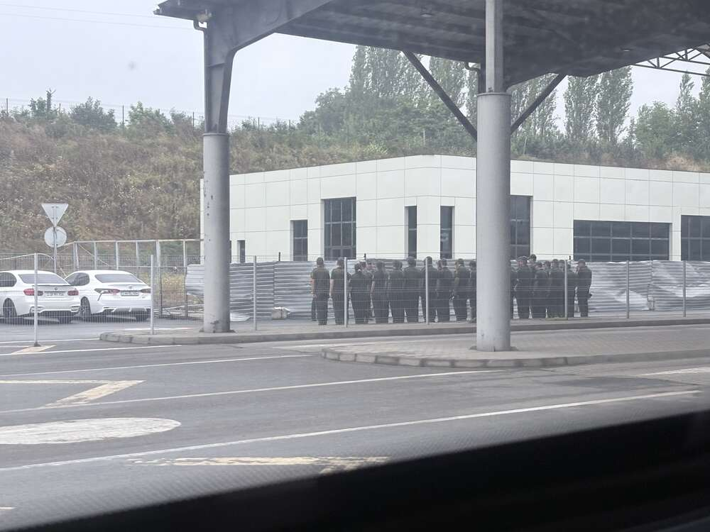
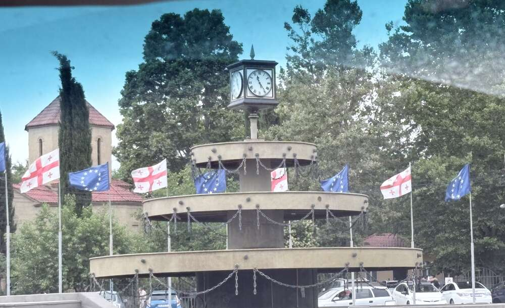
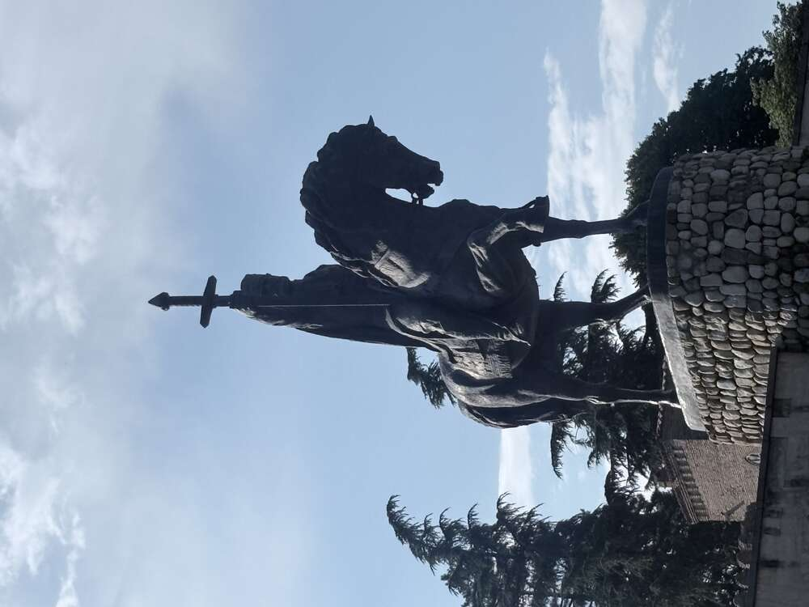
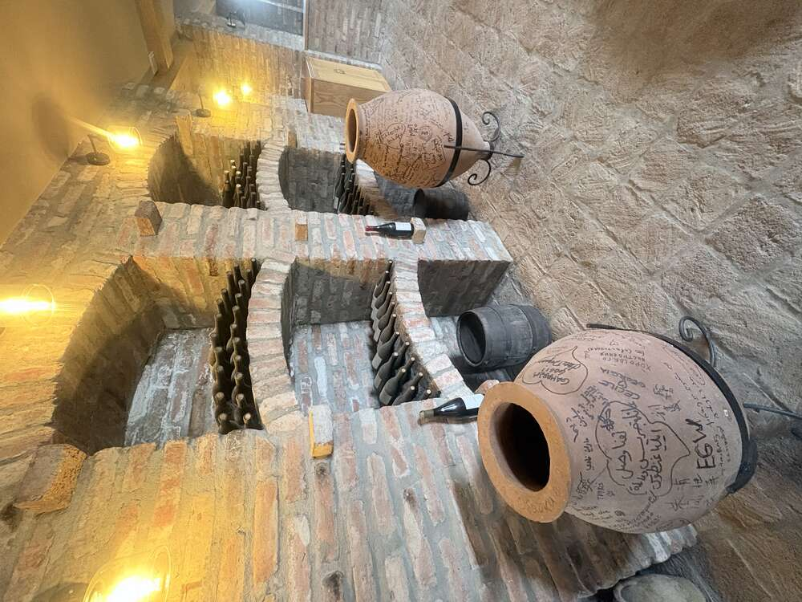
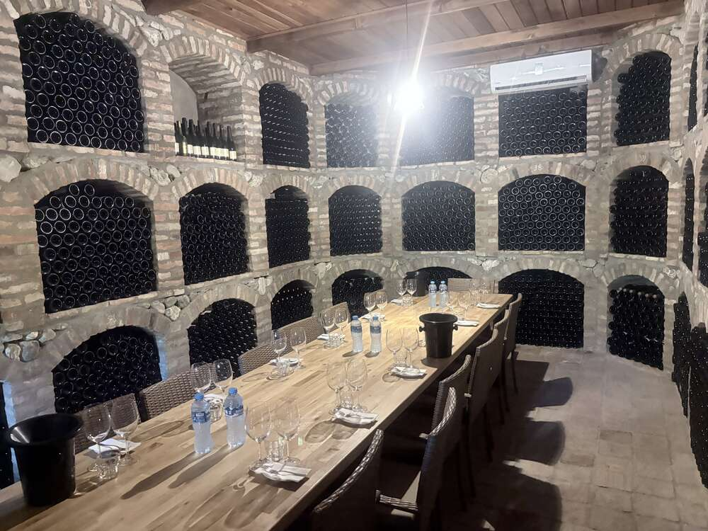
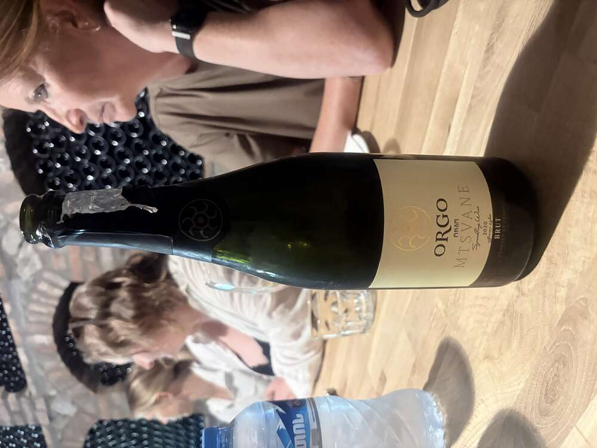

Official itinerary: crossing the border from Armenia into Georgia at the Bagratashen/Sadakhlo checkpoint, then continuing on towards Tbilisi.
Georgia, together with Armenia, is one of the oldest Christian nations in the world – Christianity became the state religion here as early as 337 AD, according to tradition through the missionary Saint Nino. Historically the country consisted of two kingdoms: Colchis in the west (setting of the Greek legend of the Argonauts and the Golden Fleece) and Iberia in the east, around Tbilisi. A unique alphabet unrelated to any other script (Mkhedruli) emerged as early as the 4th/5th century – to this day an expression of a distinctly independent cultural identity.
Georgia’s political golden age came in the 12th/13th century under Queen Tamar, when the kingdom stretched from sea to sea. There followed centuries of Mongol, Persian and Ottoman rule, annexation by the Russian Empire in 1801, a brief independence from 1918–1921, then Soviet rule until 1991 – with Georgia, of all places, producing the most prominent Soviet dictator in Joseph Stalin (born in Gori). Independence in 1991 was followed by civil war, the “Rose Revolution” of 2003 and the 2008 war with Russia over the breakaway regions of Abkhazia and South Ossetia, which remain under the control of Russian troops to this day.
Current situation: Georgia was granted EU candidate status at the end of 2023 – with roughly 80 percent public approval, one of the highest figures of any candidate country. At the end of November 2024, the “Georgian Dream” party, in power since 2012 (informally steered by the oligarch Bidzina Ivanishvili), declared the accession process suspended until at least 2028 – sparking ongoing pro-European protests in Tbilisi and other cities ever since. The EU flags that greet you just beyond the border thus stand in a certain tension with the current government line.
Bagratashen/Sadakhlo border crossing: The busiest of the three border crossings between Armenia and Georgia open to foreigners, close to the Debed River and only a few kilometres from Haghpat. The border processing itself is considered one of the most relaxed in the entire Caucasus – no luggage checks, no unnecessary questions, just a stamp in the passport.

The waiting area in the border building – bilingual signage in Armenian and Russian, interspersed with advertising for Armenian Ararat coffee. An architecturally sober place that nevertheless works as a small window in time between two cultural spheres.

Armenian recruits in formation right by the border compound – Armenia has universal conscription (normally two years), and border regions like this one have a correspondingly strong military presence. An image that underscores the tense geopolitical situation of the whole region, even though this particular stretch of border is considered quiet.
Arrival in Georgia: Barely across the border, the first Georgian townscape greets you with a familiar motif: a fountain with a clock, surrounded by fluttering flags.

Georgian national flags (the “five-cross flag”, reinstated as the official national symbol in 2004) alternating with EU flags – an image that, given the current political situation, almost reads as a quiet statement of intent.

A typical Soviet war memorial by the roadside: a mother figure handing a sword to two children – iconography from the same visual tradition as the better-known “Mother Homeland” monuments in Volgograd, Kyiv or Yerevan, here on a smaller scale commemorating those who fell in the Second World War (the “Great Patriotic War”). Memorials like this still stand in practically every larger town across the post-Soviet space.
Curiosity by the roadside: In the middle of Georgian traffic, an old Ford Transit with Berlin advertising lettering suddenly appears – “7 Fachmärkte unter einem Dach” (“7 specialist stores under one roof”), complete with a German email address.

Used German commercial vehicles have been exported to the Caucasus and Central Asia in large numbers for years – often with their original lettering intact, as here: a tradesman’s van from Berlin-Rudow, now driving through the province of Kvemo Kartli with Georgian plates. A small, unintentional greeting from home.
Telavi: Capital of the Kakheti wine region and historic residence of the Kakhetian kings, around 70 km east of Tbilisi in the Alazani Valley. The valley is considered the true “cradle of winemaking” – the oldest known traces of wine production anywhere were found here, with an unbroken tradition going back some 8,000 years.

The equestrian statue of King Erekle II (1720–1798) in the town centre – an 8.5-metre bronze from 1971 and one of Telavi’s landmarks. Erekle II was the last great Georgian king, who united Kakheti and Kartli, fought against the Persians and Ottomans, and placed himself under Russian protection in the 1783 Treaty of Georgievsk – a step that, in hindsight, paved the way for the later Russian annexation. His personal courage made him so popular with his people that he was nicknamed “Patara Kakhi” (“Little Kakhetian”), in the spirit of Napoleon’s “Little Corporal”.
Wine from the qvevri: The traditional Georgian method of making wine in egg-shaped clay vessels (qvevri) holding up to 3,000 litres was declared part of humanity’s intangible cultural heritage by UNESCO in 2013. The vessels are buried in the ground up to the neck – the earth keeps the temperature constantly cool during the weeks- to months-long fermentation on the skins (skin contact). In white wines, this extended skin contact produces the characteristic amber to golden hue – hence the internationally used term “amber wine” for Georgian orange wines.

The floor room of a wine cellar with sunken qvevri – the round openings are buried flush with the ground so that only the neck rims remain visible. A well-fired qvevri can last for several decades, sometimes generations.

Larger clay jars in the tasting room, densely covered with signatures and greetings from past groups of visitors in dozens of languages – an informal guestbook made of clay.

Woven wicker covers around large glass demijohns – a traditional way of protecting wine or chacha (Georgian grape brandy) from breakage in transit, much like the Italian fiasco basket bottles used for Chianti.

The tasting room itself: a long wooden table surrounded by brick niches full of resting bottles – an image that reveals the seriousness behind Georgian hospitality. Wine here is not an accessory but a cultural treasure.

Among the wines tasted is ORGO Mtsvane Brut – a sparkling wine made from the indigenous white grape variety Mtsvane, bottle-fermented in the traditional method. Mtsvane (Georgian for “green”) is, alongside Rkatsiteli, one of Kakheti’s most important white grape varieties.

Emptied bottles as a little shelf memorial to the evening – the cognac bottle beside them betrays that it did not stop at the wine tasting.